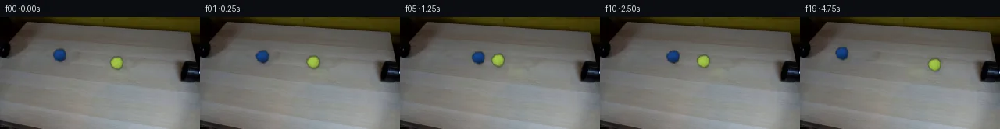

![首帧]()

Round 00
2026-11-05T16:09:35.714551+00:00像素候选变化代码 +320/−0inspection 更新
pixels 45dee8f48f7086a5 · code 73fd75ce535b19b2
查看本轮 generate.py 真实 diff
--- previous/generate.py
+++ current/generate.py
@@ -0,0 +1,320 @@
+#!/usr/bin/env python3
+"""PixelWorld case_0033 generator.
+
+Two tennis balls (blue, yellow) roll out of opposite pipes along the table
+diagonal with equal speed, collide head-on, compress, and rebound.
+
+Local pixel operations only: the two frame-0 ball/shadow zones are inpainted
+into a static clean-table background (horizontal diffusion + streak texture),
+then analytic shaded, rolling, slightly motion-blurred ball sprites are
+composited per frame. Frame 00 is emitted byte-identical to first_frame.png.
+"""
+import sys
+import numpy as np
+from PIL import Image, ImageDraw, ImageFont
+from scipy import ndimage as ndi
+from artifact_io import save as save_artifacts
+
+W, H, SS = 256, 144, 4
+HERE = __file__.rsplit('/', 1)[0] or '.'
+SRC = np.array(Image.open(f'{HERE}/first_frame.png').convert('RGB'))
+
+# ---------------------------------------------------------------- geometry
+U = np.array([0.9928, 0.1197]) # blue travel direction (toward yellow)
+C0B = np.array([76.0, 49.7]) # blue center in frame 0
+C0Y = np.array([149.9, 58.6]) # yellow center in frame 0
+R_PX = 8.0 # disk radius incl. soft felt edge
+V_IN, V_OUT, SQUASH_P = 4.92, 4.43, 30.5
+
+def path_coords(t):
+ """Signed path distances (px) travelled from frame 0 along U."""
+ if t <= 6:
+ p = V_IN * t
+ return p, p
+ if t == 7:
+ return SQUASH_P, SQUASH_P
+ p = SQUASH_P - V_OUT * (t - 7)
+ return p, p
+
+def centers(t):
+ pb, py = path_coords(t)
+ cb = C0B + U * pb
+ cy = C0Y - U * py
+ return cb, cy
+
+def squash(t):
+ """(along-track scale, across-track scale)."""
+ if t == 7:
+ return 0.82, 1.15
+ if t in (6, 8):
+ return 0.94, 1.05
+ return 1.0, 1.0
+
+# ----------------------------------------------------- background inpaint
+def ellipse_mask(cx, cy, rx, ry, deg):
+ a = np.deg2rad(deg)
+ c, s = np.cos(a), np.sin(a)
+ dx, dy = np.arange(W)[None, :] - cx, np.arange(H)[:, None] - cy
+ X, Y = c * dx + s * dy, -s * dx + c * dy
+ return (X / rx) ** 2 + (Y / ry) ** 2 <= 1.0
+
+def build_clean_background():
+ m = (ellipse_mask(79, 49, 24, 10, 7) | # blue ball + its dark lobes
+ ellipse_mask(149, 57, 21, 10, 7)) # yellow ball + its dark lobes
+ m = ndi.binary_dilation(m, iterations=1)
+
+ work = SRC.astype(np.float32).copy()
+ # per-row horizontal linear fill between run boundaries
+ for y in range(H):
+ row = m[y]
+ if not row.any():
+ continue
+ idx = np.flatnonzero(row)
+ bounds = np.r_[0, np.flatnonzero(np.diff(idx) > 1) + 1, len(idx)]
+ for a, b in zip(bounds[:-1], bounds[1:]):
+ l, r = int(idx[a]), int(idx[b - 1])
+ if l == 0 or r == W - 1:
+ val = work[y, r + 1 if l == 0 else l - 1]
+ else:
+ lo, hi = work[y, l - 1].astype(np.float32), work[y, r + 1].astype(np.float32)
+ ts = np.arange(l, r + 1)
+ val = lo + (hi - lo) * (ts - l)[:, None] / max(r - l + 2, 1)
+ work[y, l:r + 1] = val
+
+ # harmonic smoothing of the fill (Jacobi diffusion, fixed real boundary)
+ interior = ndi.binary_erosion(m, iterations=1)
+ for _ in range(260):
+ nbr = (work[:-2, 1:-1] + work[2:, 1:-1] + work[1:-1, :-2] + work[1:-1, 2:]) * 0.25
… diff truncated; 233 more lines …